Lecciones de circuitos eléctricos - Volumen I
Capítulo 7
CIRCUITOS COMBINADOS EN SERIE-PARALELO
- What is a series-parallel circuit?
- Analysis technique
- Re-drawing complex schematics
- Component failure analysis
- Building series-parallel resistor circuits
- Contributors
What is a series-parallel circuit?
Con circuitos en serie simples, todos los componentes están conectados de extremo a extremo para formar un solo camino para que los electrones fluyan a través del circuito:

Con circuitos paralelos simples, todos los componentes están conectados entre los mismos dos conjuntos de puntos eléctricamente comunes, creando múltiples caminos para que los electrones fluyan de un extremo de la batería al otro:

Con cada una de estas dos configuraciones de circuitos básicos, tenemos conjuntos específicos de reglas que describen las relaciones de voltaje, corriente y resistencia.
- Circuitos en serie:
- Las caídas de voltaje se suman para igualar el voltaje total.
- Todos los componentes comparten la misma (igual) corriente.
- Las resistencias se suman para igualar la resistencia total.
- Circuitos paralelos:
- Todos los componentes comparten el mismo (igual) voltaje.
- Las corrientes derivadas se suman para igualar la corriente total.
- Las resistencias disminuyen hasta igualar la resistencia total.
Sin embargo, si los componentes del circuito están conectados en serie en algunas partes y en paralelo en otras, no podremos aplicar unasolteroconjunto de reglas para cada parte de ese circuito. En cambio, tendremos que identificar qué partes de ese circuito son series y cuáles son paralelas, luego aplicar selectivamente reglas de series y paralelos según sea necesario para determinar qué está sucediendo. Tomemos el siguiente circuito, por ejemplo:
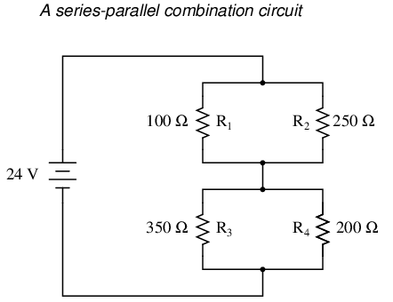
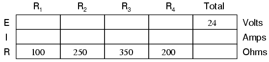
Este circuito no es ni una simple serie ni un simple paralelo. Más bien, contiene elementos de ambos. La corriente sale por la parte inferior de la batería y se divide para viajar a través de R3y r4, se vuelve a unir, luego se separa nuevamente para viajar a través de R1y r2, luego se vuelve a unir para regresar a la parte superior de la batería. Existe más de un camino para que viaje la corriente (no en serie), pero hay más de dos conjuntos de puntos eléctricamente comunes en el circuito (no en paralelo).
Debido a que el circuito es una combinación de serie y paralelo, no podemos aplicar las reglas de voltaje, corriente y resistencia "en toda la tabla" para comenzar el análisis como lo haríamos cuando los circuitos estaban en una dirección u otra. Por ejemplo, si el circuito anterior fuera una serie simple, podríamos simplemente sumar R1a través de R4para llegar a una resistencia total, resuelva la corriente total y luego resuelva todas las caídas de voltaje. Del mismo modo, si el circuito anterior fuera paralelo simple, podríamos simplemente resolver las corrientes derivadas, sumar las corrientes derivadas para calcular la corriente total y luego calcular la resistencia total a partir del voltaje total y la corriente total. Sin embargo, la solución de este circuito será más compleja.
La tabla aún nos ayudará a administrar los diferentes valores para circuitos combinados en serie-paralelo, pero tendremos que tener cuidado de cómo y dónde aplicamos las diferentes reglas para serie y paralelo. La ley de Ohm, por supuesto, sigue funcionando igual para determinar valores dentro de una columna vertical de la tabla.
Si somos capaces de identificar qué partes del circuito están en serie y cuáles en paralelo, podemos analizarlo por etapas, acercándonos a cada parte una a la vez, utilizando las reglas adecuadas para determinar las relaciones de voltaje, corriente y resistencia. El resto de este capítulo estará dedicado a mostrarle técnicas para hacer esto.
- REVISAR:
- Las reglas de los circuitos en serie y en paralelo deben aplicarse selectivamente a los circuitos que contengan ambos tipos de interconexiones.
Analysis technique
El objetivo del análisis de circuitos de resistencias en serie-paralelo es poder determinar todas las caídas de voltaje, corrientes y disipaciones de potencia en un circuito. La estrategia general para lograr este objetivo es la siguiente:
- Paso 1: Evaluar qué resistencias en un circuito están conectadas entre sí en serie simple o en paralelo simple.
- Paso 2: Vuelva a dibujar el circuito, reemplazando cada una de esas combinaciones de resistencias en serie o en paralelo identificadas en el paso 1 con una resistencia única de valor equivalente. Si utiliza una tabla para gestionar variables, cree una nueva columna de tabla para cada equivalente de resistencia.
- Paso 3: Repita los pasos 1 y 2 hasta que todo el circuito se reduzca a una resistencia equivalente.
- Paso 4: Calcule la corriente total a partir del voltaje total y la resistencia total (I=E/R).
- Paso 5: Tomando los valores de voltaje total y corriente total, regrese al último paso en el proceso de reducción del circuito e inserte esos valores cuando corresponda.
- Paso 6: A partir de resistencias conocidas y valores de voltaje total/corriente total del paso 5, use la Ley de Ohm para calcular valores desconocidos (voltaje o corriente) (E=IR o I=E/R).
- Paso 7: Repita los pasos 5 y 6 hasta que se conozcan todos los valores de voltaje y corriente en la configuración del circuito original. Básicamente, procederá paso a paso desde la versión simplificada del circuito hasta su forma original y compleja, ingresando valores de voltaje y corriente cuando corresponda hasta que se conozcan todos los valores de voltaje y corriente.
- Paso 8: Calcule las disipaciones de potencia a partir de valores conocidos de voltaje, corriente y/o resistencia.
Esto puede parecer un proceso intimidante, pero se entiende mucho más fácilmente con el ejemplo que con la descripción.
En el circuito de ejemplo anterior, R1y r2están conectados en una disposición paralela simple, al igual que R3y r4. Una vez identificadas, estas secciones deben convertirse en resistencias individuales equivalentes y volver a dibujar el circuito:
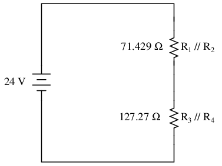
Los símbolos de doble barra (//) representan "paralelo" para mostrar que los valores de resistencia equivalentes se calcularon utilizando la fórmula 1/(1/R). La resistencia de 71,429 Ω en la parte superior del circuito es el equivalente a R1y r2en paralelo entre sí. La resistencia de 127,27 Ω en la parte inferior es el equivalente a R3y r4en paralelo entre sí.
Nuestra tabla se puede ampliar para incluir estos equivalentes de resistencia en sus propias columnas:
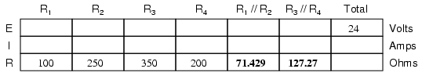
Ahora debería ser evidente que el circuito se ha reducido a una configuración en serie simple con sólo dos resistencias (equivalentes). El último paso en la reducción es sumar estas dos resistencias para obtener una resistencia total del circuito. Cuando sumamos esas dos resistencias equivalentes, obtenemos una resistencia de 198,70 Ω. Ahora, podemos volver a dibujar el circuito como una resistencia única equivalente y agregar la cifra de resistencia total a la columna más a la derecha de nuestra tabla. Tenga en cuenta que la columna "Total" ha sido reetiquetada (R1//R2--R3//R4) para indicar cómo se relaciona eléctricamente con las otras columnas de figuras. El símbolo "--" se usa aquí para representar "serie", del mismo modo que el símbolo "//" se usa para representar "paralelo".
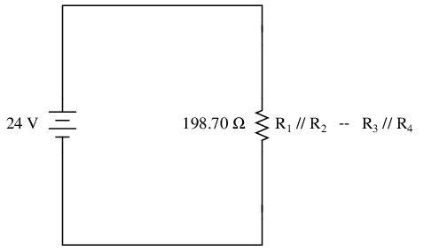
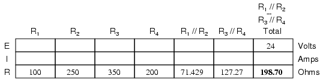
Ahora, la corriente total del circuito se puede determinar aplicando la Ley de Ohm (I=E/R) a la columna "Total" de la tabla:
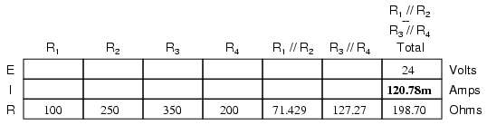
Volviendo a nuestro dibujo de circuito equivalente, nuestro valor de corriente total de 120,78 miliamperios se muestra aquí como la única corriente:
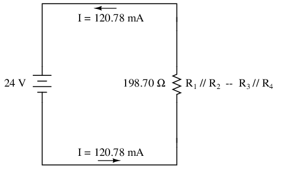
Ahora comenzamos a trabajar hacia atrás en nuestra progresión de rediseños de circuitos hasta la configuración original. El siguiente paso es ir al circuito donde R1//R2y r3//R4están en serie:
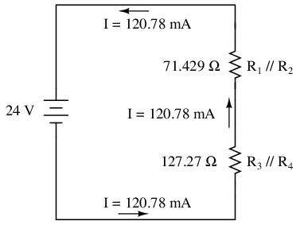
Desde R1//R2y r3//R4están en serie entre sí, la corriente a través de esos dos conjuntos de resistencias equivalentes debe ser la misma. Además, la corriente que pasa por ellos debe ser la misma que la corriente total, por lo que podemos completar nuestra tabla con los valores actuales apropiados, simplemente copiando la cifra actual de la columna Total a la R.1//R2y r3//R4columnas:
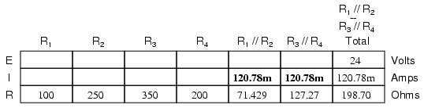
Ahora, conociendo la corriente a través de las resistencias equivalentes R1//R2y r3//R4, podemos aplicar la Ley de Ohm (E=IR) a las dos columnas verticales derechas para encontrar caídas de voltaje a través de ellas:
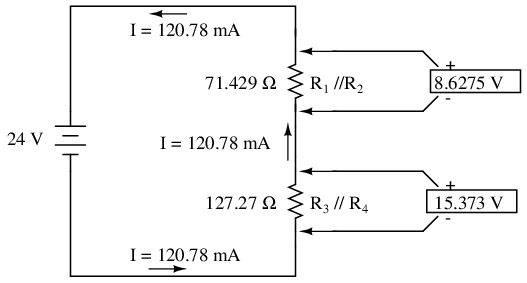
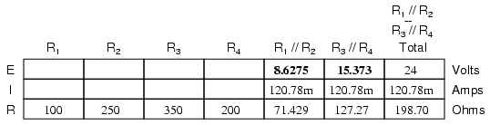
Porque sabemos R1//R2y r3//R4son equivalentes de resistencias en paralelo, y sabemos que las caídas de voltaje en circuitos en paralelo son las mismas, podemos transferir las caídas de voltaje respectivas a las columnas apropiadas en la tabla para esas resistencias individuales. En otras palabras, retrocedemos un paso más en nuestra secuencia de dibujo hasta la configuración original y completamos la tabla en consecuencia:
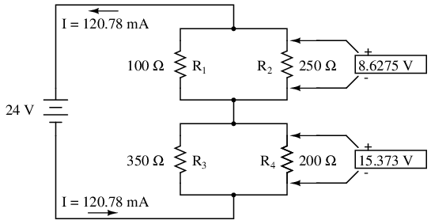
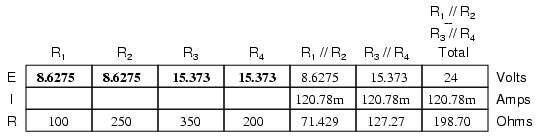
Finalmente, la sección original de la tabla (columnas R1a través de R4) está completo con suficientes valores para terminar. Aplicando la Ley de Ohm a las columnas verticales restantes (I=E/R), podemos determinar las corrientes a través de R1, R2, R3y R4individualmente:
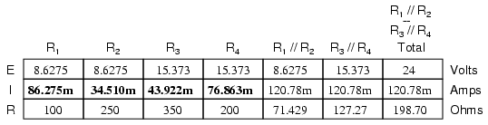
Habiendo encontrado todos los valores de voltaje y corriente para este circuito, podemos mostrar esos valores en el diagrama esquemático como tal:
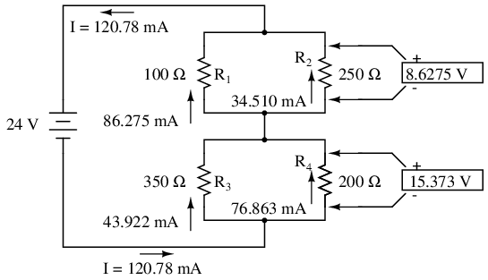
Como comprobación final de nuestro trabajo, podemos ver si los valores actuales calculados suman como deberían con el total. Desde R1y r2están en paralelo, sus corrientes combinadas deben sumar un total de 120,78 mA. Asimismo, desde R3y r4están en paralelo, sus corrientes combinadas también deberían sumar el total de 120,78 mA. Puede comprobarlo usted mismo para verificar que estas cifras sumen como se esperaba.
También se puede utilizar una simulación por computadora para verificar la exactitud de estas cifras. El siguiente análisis de SPICE mostrará todos los voltajes y corrientes de resistencia (tenga en cuenta las fuentes de voltaje con detección de corriente vi1, vi2,... "ficticias" en serie con cada resistencia en la lista de red, necesarias para que el programa de computadora SPICE rastree la corriente a través de cada ruta). Estas fuentes de voltaje se configurarán para que tengan valores de cero voltios cada una, de modo que no afecten al circuito de ninguna manera.
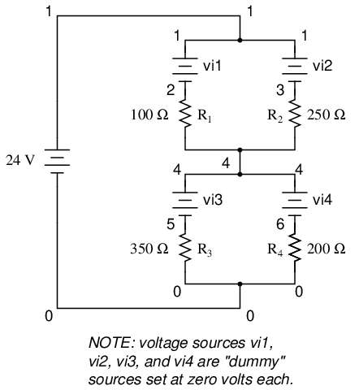
series-parallel circuit v1 1 0 vi1 1 2 dc 0 vi2 1 3 dc 0 r1 2 4 100 r2 3 4 250 vi3 4 5 dc 0 vi4 4 6 dc 0 r3 5 0 350 r4 6 0 200 .dc v1 24 24 1 .print dc v(2,4) v(3,4) v(5,0) v(6,0) .print dc i(vi1) i(vi2) i(vi3) i(vi4) .end
He anotado las cifras de salida de SPICE para hacerlas más legibles, indicando qué cifras de voltaje y corriente pertenecen a qué resistencias.
v1 v(2,4) v(3,4) v(5) v(6) 2.400E+01 8.627E+00 8.627E+00 1.537E+01 1.537E+01 Battery R1 voltage R2 voltage R3 voltage R4 voltage voltage
v1 i(vi1) i(vi2) i(vi3) i(vi4) 2.400E+01 8.627E-02 3.451E-02 4.392E-02 7.686E-02 Battery R1 current R2 current R3 current R4 current voltage
Como puede ver, todas las cifras concuerdan con nuestros valores calculados.
- REVISAR:
- Para analizar un circuito combinado en serie-paralelo, siga estos pasos:
- Reduzca el circuito original a una sola resistencia equivalente, volviendo a dibujar el circuito en cada paso de la reducción a medida que las partes simples en serie y en paralelo se reducen a resistencias simples y equivalentes.
- Resuelva para la resistencia total.
- Resuelva la corriente total (I=E/R).
- Determine las caídas de voltaje de resistencia equivalentes y las corrientes de rama una etapa a la vez, volviendo a la configuración del circuito original.
Re-drawing complex schematics
Por lo general, los circuitos complejos no están organizados en diagramas esquemáticos bonitos, claros y limpios que podamos seguir. A menudo están dibujados de tal manera que resulta difícil seguir qué componentes están en serie y cuáles en paralelo entre sí. El propósito de esta sección es mostrarle un método útil para volver a dibujar esquemas de circuitos de manera clara y ordenada. Al igual que la estrategia de reducción de etapas para resolver circuitos combinados en serie-paralelo, es un método más fácil de demostrar que de describir.
Comencemos con el siguiente diagrama de circuito (complicado). Quizás este diagrama fue dibujado originalmente de esta manera por un técnico o ingeniero. Quizás fue esbozado mientras alguien rastreaba los cables y conexiones de un circuito real. En cualquier caso, aquí está en toda su fealdad:
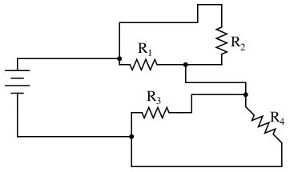
En los circuitos eléctricos y los diagramas de circuitos, la longitud y el recorrido de los componentes que conectan los cables en un circuito importan poco. (En realidad, en algunos circuitos de CA se vuelve crítico, y longitudes de cable muy largas pueden contribuir con una resistencia no deseada tanto a los circuitos de CA como a los de CC, pero en la mayoría de los casos la longitud del cable es irrelevante). Lo que esto significa para nosotros es que podemos alargar, encoger y/o doblar los cables de conexión sin afectar el funcionamiento de nuestro circuito.
La estrategia que he encontrado más fácil de aplicar es comenzar rastreando la corriente desde un terminal de la batería hasta el otro terminal, siguiendo el bucle de componentes más cercanos a la batería e ignorando todos los demás cables y componentes por el momento. Mientras traza la ruta del bucle, marque cada resistencia con la polaridad adecuada para la caída de voltaje.
En este caso, comenzaré a trazar este circuito en el terminal negativo de la batería y terminaré en el terminal positivo, en la misma dirección general en la que fluirían los electrones. Al trazar esta dirección, marcaré cada resistencia con la polaridad negativa en el lado de entrada y positiva en el lado de salida, porque así es como será la polaridad real cuando los electrones (con carga negativa) entren y salgan de una resistencia:
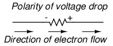
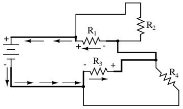
Todos los componentes que se encuentran a lo largo de este breve bucle se dibujan verticalmente en orden:
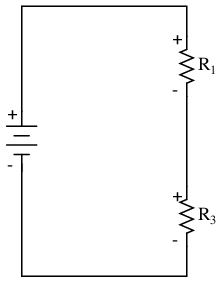
Ahora, proceda a rastrear los bucles de componentes conectados alrededor de los componentes que acaban de rastrear. En este caso, hay un bucle alrededor de R.1formado por R2, y otro bucle alrededor de R3formado por R4:
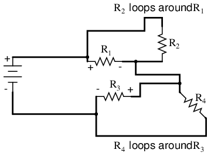
Siguiendo esos bucles, dibujo R2y r4en paralelo con R1y r3(respectivamente) en el diagrama vertical. Observando la polaridad de las caídas de voltaje a través de R3y r1, marco R4y r2asimismo:
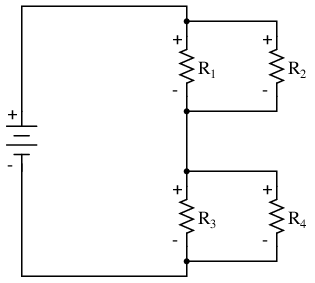
Ahora tenemos un circuito que se entiende y analiza muy fácilmente. En este caso, es idéntica a la configuración en serie-paralelo de cuatro resistencias que examinamos anteriormente en este capítulo.
Veamos otro ejemplo, incluso más feo que el anterior:
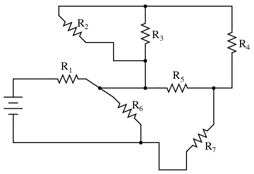
El primer bucle que trazaré es desde el lado negativo (-) de la batería, pasando por R6, a través de R1y de regreso al extremo positivo (+) de la batería:
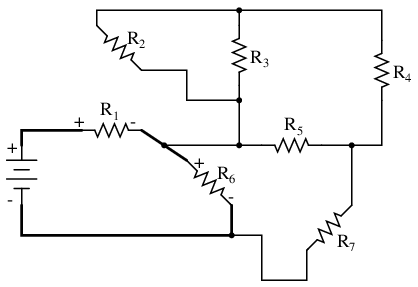
Al volver a dibujar verticalmente y realizar un seguimiento de las polaridades de la caída de voltaje a lo largo del camino, nuestro circuito equivalente comienza con este aspecto:
A continuación, podemos proceder a seguir el siguiente bucle alrededor de una de las resistencias trazadas (R6), en este caso, el bucle formado por R5y r7. Como antes, comenzamos en el extremo negativo de R.6y proceder al extremo positivo de R6, marcando polaridades de caída de voltaje a través de R7y r5a medida que avanzamos:
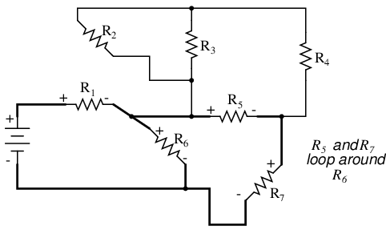
Ahora sumamos la R5--R7bucle al dibujo vertical. Observe cómo las polaridades de caída de voltaje a través de R7y r5corresponde con el de R6, y cómo esto es lo mismo que encontramos al rastrear R7y r5en el circuito original:
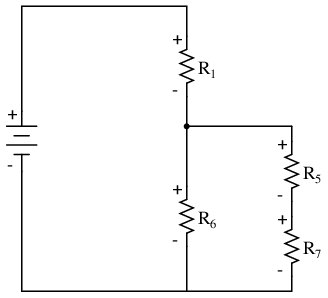
Repetimos el proceso nuevamente, identificando y rastreando otro bucle alrededor de una resistencia ya rastreada. En este caso, la R3--R4bucle alrededor de R5Parece un buen bucle para rastrear a continuación:
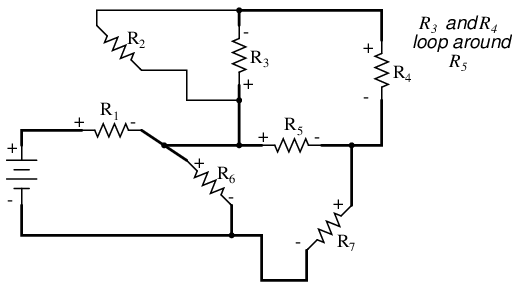
Añadiendo la R3--R4bucle hasta el dibujo vertical, marcando también las polaridades correctas:
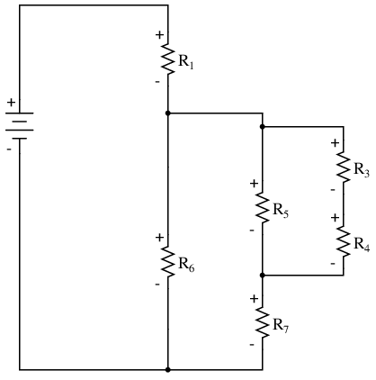
Con solo una resistencia restante por rastrear, el siguiente paso es obvio: rastrear el bucle formado por R2alrededor de R3:
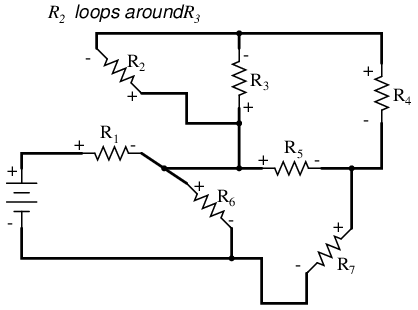
Añadiendo R2al dibujo vertical, ¡y terminamos! El resultado es un diagrama muy fácil de entender en comparación con el original:
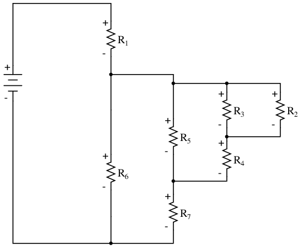
Este diseño simplificado facilita enormemente la tarea de determinar por dónde empezar y cómo proceder para reducir el circuito a una única resistencia equivalente (total). Observe cómo se ha vuelto a dibujar el circuito, todo lo que tenemos que hacer es comenzar desde el lado derecho y avanzar hacia la izquierda, reduciendo las combinaciones de resistencias en serie simple y en paralelo simple un grupo a la vez hasta que terminemos.
En este caso particular, comenzaríamos con la combinación paralela simple de R2y r3, reduciéndola a una única resistencia. Entonces, tomaríamos esa resistencia equivalente (R2//R3) y el que está en serie con él (R4), reduciéndolas a otra resistencia equivalente (R2//R3--R4). A continuación, procederíamos a calcular el equivalente paralelo de esa resistencia (R2//R3--R4) con R5, luego en serie con R7, luego en paralelo con R6, luego en serie con R1para darnos una gran resistencia total para el circuito en su conjunto.
A partir de ahí podríamos calcular la corriente total a partir del voltaje total y la resistencia total (I=E/R), luego "expandir" el circuito nuevamente a su forma original una etapa a la vez, distribuyendo los valores apropiados de voltaje y corriente a las resistencias a medida que avanzamos.
- REVISAR:
- Los cables en diagramas y circuitos reales se pueden alargar, acortar y/o mover sin afectar el funcionamiento del circuito.
- Para simplificar un esquema de circuito complicado, siga estos pasos:
- Rastree la corriente de un lado de la batería al otro, siguiendo cualquier camino único ("bucle") hasta la batería. A veces funciona mejor comenzar con el bucle que contiene la mayor cantidad de componentes, pero independientemente del camino tomado el resultado será preciso. Marque la polaridad de las caídas de voltaje en cada resistencia mientras traza el bucle. Dibuja los componentes que encuentres a lo largo de este bucle en un esquema vertical.
- Marque los componentes rastreados en el diagrama original y rastree los bucles restantes de los componentes en el circuito. Utilice marcas de polaridad en los componentes rastreados como guías para saber qué se conecta y dónde. Documente también los nuevos componentes en bucles en el esquema de rediseño vertical.
- Repita el último paso tantas veces como sea necesario hasta que se hayan rastreado todos los componentes del diagrama original.
Component failure analysis
"Considero que entiendo una ecuación cuando puedo predecir las propiedades de sus soluciones, sin llegar a resolverla."
P.A.M Dirac, físico
Hay mucho de cierto en esa cita de Dirac. Con una pequeña modificación, puedo extender su sabiduría a los circuitos eléctricos diciendo: "Considero que entiendo un circuito cuando puedo predecir los efectos aproximados de varios cambios realizados en él sin realizar ningún cálculo".
Al final del capítulo sobre circuitos en serie y en paralelo, consideramos brevemente cómo se podrían analizar los circuitos en uncualitativoen vez decuantitativomanera. Desarrollar esta habilidad es un paso importante para convertirse en un solucionador de problemas competente en circuitos eléctricos. Una vez que tenga una comprensión profunda de cómo cualquier falla en particular afectará a un circuito (es decir, no tiene que realizar ninguna aritmética para predecir los resultados), será mucho más fácil trabajar al revés: identificar la fuente del problema evaluando cómo se está comportando un circuito.
También se mostró al final del capítulo sobre circuitos en serie y paralelo cómo el método de tabla funciona tan bien para ayudar en el análisis de fallas como para el análisis de circuitos en buen estado. Podemos llevar esta técnica un paso más allá y adaptarla para un análisis cualitativo total. Por"cualitativo"Me refiero a trabajar con símbolos que representan "aumento", "disminución" e "igual" en lugar de cifras numéricas precisas. Todavía podemos usar los principios de los circuitos en serie y paralelo, y los conceptos de la Ley de Ohm, solo usaremos símbolos simbólicos.cualidadesen lugar de numéricocantidades. Al hacer esto, podemos obtener una "sensación" más intuitiva de cómo funcionan los circuitos en lugar de apoyarnos en ecuaciones abstractas, logrando la definición de "comprensión" de Dirac.
Basta de hablar. Probemos esta técnica en un ejemplo de circuito real y veamos cómo funciona:
Este es el primer circuito "enrevesado" que aclaramos para su análisis en la última sección. Como ya sabes cómo este circuito en particular se reduce a secciones en serie y en paralelo, me saltaré el proceso e iré directamente a la forma final:
R3y r4están en paralelo entre sí; también lo son r1y r2. Los equivalentes paralelos de R3//R4y r1//R2están en serie entre sí. Expresada en forma simbólica, la resistencia total de este circuito es la siguiente:
RTotal= (R1//R2)--(R3//R4)
Primero, necesitamos formular una tabla con todas las filas y columnas necesarias para este circuito:
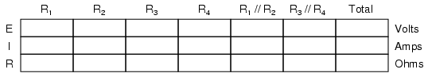
A continuación, necesitamos un escenario de falla. Supongamos que la resistencia R2fallaran en corto. Supondremos que todos los demás componentes mantienen sus valores originales. Debido a que analizaremos este circuito cualitativamente en lugar de cuantitativamente, no insertaremos ningún número real en la tabla. Para cualquier cantidad que no haya cambiado después de la falla del componente, usaremos la palabra "igual" para representar "sin cambios con respecto a antes". Para cualquier cantidad que haya cambiado como resultado de la falla, usaremos una flecha hacia abajo para "disminuir" y una flecha hacia arriba para "aumentar". Como de costumbre, comenzamos completando los espacios de la tabla para resistencias individuales y voltaje total, nuestros valores "dados":
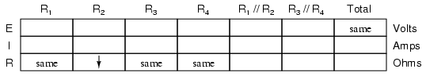
El único valor "dado" diferente del estado normal del circuito es R2, que dijimos que falló en corto (resistencia anormalmente baja). Todos los demás valores iniciales son los mismos que antes, representados por las "mismas" entradas. Todo lo que tenemos que hacer ahora es trabajar con la conocida Ley de Ohm y los principios de serie-paralelo para determinar qué sucederá con todos los demás valores del circuito.
Primero, necesitamos determinar qué sucede con las resistencias de las subsecciones paralelas R1//R2y r3//R4. Si ni R3ni R4han cambiado en el valor de resistencia, entonces tampoco lo hará su combinación paralela. Sin embargo, dado que la resistencia de R2ha disminuido mientras que R1se ha mantenido igual, su combinación paralela también debe disminuir en resistencia:
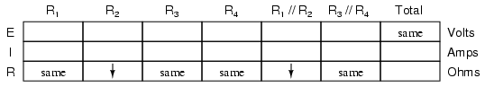
Ahora necesitamos descubrir qué sucede con la resistencia total. Esta parte es fácil: cuando se trata de un solo cambio de componente en el circuito, el cambio en la resistencia total será en la misma dirección que el cambio del componente fallido. Esto no quiere decir que elmagnitudde cambio entre el componente individual y el circuito total será el mismo, simplemente eldirecciónde cambio. En otras palabras, si el valor de una sola resistencia disminuye, entonces la resistencia total del circuito también debe disminuir, y viceversa. En este caso, dado que R2es el único componente que falla y su resistencia ha disminuido, la resistencia totaldebedisminuir:
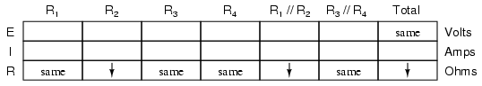
Ahora podemos aplicar la Ley de Ohm (cualitativamente) a la columna Total de la tabla. Dado que el voltaje total sigue siendo el mismo y la resistencia total ha disminuido, podemos concluir que la corriente total debe aumentar (I=E/R).
En caso de que no estés familiarizado con la evaluación cualitativa de una ecuación, funciona así. Primero, escribimos la ecuación resuelta para la cantidad desconocida. En este caso, estamos tratando de resolver la corriente, dado el voltaje y la resistencia:
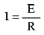
Ahora que nuestra ecuación está en la forma adecuada, evaluamos qué cambio (si alguno) experimentará "I", dados los cambios a "E" y "R":
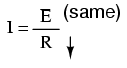
Si el denominador de una fracción disminuye de valor mientras el numerador permanece igual, entonces el valor total de la fracción debe aumentar:
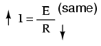
Por tanto, la Ley de Ohm (I=E/R) nos dice que la corriente (I) aumentará. Marcaremos esta conclusión en nuestra tabla con una flecha "hacia arriba":
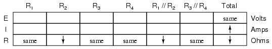
Con todos los lugares de resistencia completados en la tabla y todas las cantidades determinadas en la columna Total, podemos proceder a determinar los demás voltajes y corrientes. Sabiendo que la resistencia total en esta tabla fue el resultado de R1//R2y r3//R4 in serie, sabemos que el valor de la corriente total será el mismo que en R1//R2y r3//R4(porque los componentes en serie comparten la misma corriente). Por lo tanto, si la corriente total aumentó, entonces la corriente a través de R1//R2y r3//R4también debe haber aumentado con el fallo de R2:
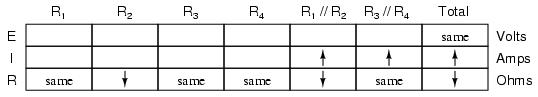
Fundamentalmente, lo que estamos haciendo aquí con un uso cualitativo de la Ley de Ohm y las reglas de los circuitos en serie y paralelo no es diferente de lo que hemos hecho antes con cifras numéricas. De hecho, es mucho más fácil porque no tienes que preocuparte por cometer un error aritmético o al pulsar una tecla en un cálculo. En cambio, sólo te estás concentrando en elprincipiosdetrás de las ecuaciones. En nuestra tabla anterior, podemos ver que la Ley de Ohm debería ser aplicable a R1//R2y r3//R4columnas. Para R3//R4, calculamos qué sucede con el voltaje, dado un aumento en la corriente y ningún cambio en la resistencia. Intuitivamente, podemos ver que esto debe resultar en un aumento de voltaje a través de la combinación paralela de R3//R4:
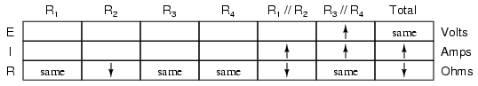
Pero, ¿cómo aplicamos la misma fórmula de la Ley de Ohm (E=IR) a la R?1//R2columna, donde tenemos resistencia decrecienteandactual en aumento? Es fácil determinar si solo una variable está cambiando, como sucedió con R3//R4, pero con dos variables moviéndose y sin números definidos con los que trabajar, la Ley de Ohm no será de mucha ayuda. Sin embargo, hay otra regla que podemos aplicar.horizontalmentepara determinar qué sucede con el voltaje en R1//R2: la regla para el voltaje en circuitos en serie. Si los voltajes en R1//R2y r3//R4suman para igualar el voltaje total (de la batería) y sabemos que el R3//R4El voltaje ha aumentado mientras que el voltaje total se ha mantenido igual, entonces el voltaje en R1//R2 debehan disminuido con el cambio de R2Valor de resistencia:
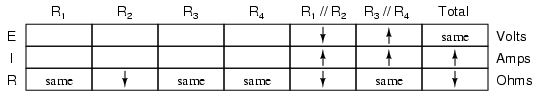
Ahora estamos listos para pasar a algunas columnas nuevas de la tabla. Sabiendo que R.3y r4comprenden la subsección paralela R3//R4, y sabiendo que el voltaje se comparte equitativamente entre los componentes paralelos, el aumento de voltaje observado en la combinación paralela R3//R4también debe verse a través de R3y r4individualmente:
Lo mismo ocurre con R1y r2. La disminución de voltaje observada a través de la combinación paralela de R1y r2se verá a través de R1y r2individualmente:
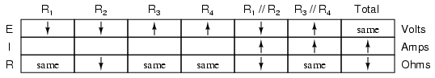
Aplicando la Ley de Ohm verticalmente a aquellas columnas con valores de resistencia sin cambios ("mismos"), podemos saber qué hará la corriente a través de esos componentes. Un aumento de voltaje a través de una resistencia sin cambios conduce a un aumento de corriente. Por el contrario, una disminución del voltaje a través de una resistencia sin cambios conduce a una disminución de la corriente:
Una vez más nos encontramos en una posición en la que la Ley de Ohm no puede ayudarnos: para R2, tanto el voltaje como la resistencia han disminuido, pero sin saberlocuántocada uno ha cambiado, no podemos usar la fórmula I=E/R para determinar cualitativamente el cambio resultante en la corriente. Sin embargo, todavía podemos aplicar las reglas de los circuitos en serie y en paralelo.horizontalmente. Sabemos que la corriente que pasa por R1//R2combinación en paralelo ha aumentado, y también sabemos que la corriente a través de R1ha disminuido. Una de las reglas de los circuitos en paralelo es que la corriente total es igual a la suma de las corrientes de las ramas individuales. En este caso, la corriente que pasa por R1//R2es igual a la corriente que pasa por R1añadido a la corriente a través de R2. Si la corriente pasa por R1//R2ha aumentado mientras la corriente pasa por R1ha disminuido, la corriente a través de R2 debehan aumentado:
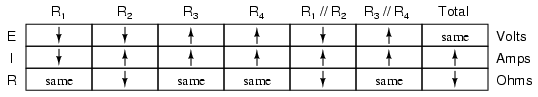
Y con esto queda completada nuestra tabla de valores cualitativos. Este ejercicio en particular puede parecer laborioso debido a todos los comentarios detallados, pero el proceso real se puede realizar muy rápidamente con algo de práctica. Una cosa importante a tener en cuenta aquí es que el procedimiento general es poco diferente del análisis cuantitativo: comenzar con los valores conocidos, luego proceder a determinar la resistencia total, luego la corriente total, luego transferir las cifras de voltaje y corriente según lo permitan las reglas de los circuitos en serie y paralelo a las columnas apropiadas.
Se pueden memorizar algunas reglas generales para ayudarle y/o comprobar su progreso al realizar dicho análisis:
- Para cualquiersolteroSi falla un componente (abierto o en cortocircuito), la resistencia total siempre cambiará en la misma dirección (ya sea aumentando o disminuyendo) que el cambio de resistencia del componente fallado.
- Cuando un componente falla en cortocircuito, su resistencia siempre disminuye. Además, la corriente que lo atraviesa aumentará y el voltaje a través de élmaygota. Digo "puede" porque en algunos casos seguirá siendo el mismo (ejemplo: un circuito paralelo simple con una fuente de energía ideal).
- Cuando un componente falla al abrirse, su resistencia siempre aumenta. La corriente a través de ese componente disminuirá a cero, porque es un camino eléctrico incompleto (sin continuidad). Estemayresulta en un aumento de voltaje a través de él. La misma excepción mencionada anteriormente también se aplica aquí: en un circuito paralelo simple con una fuente de voltaje ideal, el voltaje a través de un componente con falla abierta permanecerá sin cambios.
Building series-parallel resistor circuits
Una vez más, al construir circuitos de batería/resistencia, el estudiante o aficionado se enfrenta a varios modos diferentes de construcción. Quizás el más popular sea elplaca sin soldadura: una plataforma para construir circuitos temporales conectando componentes y cables en una cuadrícula de puntos interconectados. Una placa de pruebas parece no ser más que un marco de plástico con cientos de pequeños agujeros. Sin embargo, debajo de cada orificio hay un clip de resorte que se conecta a otros clips de resorte debajo de otros orificios. El patrón de conexión entre agujeros es simple y uniforme:

Supongamos que queremos construir el siguiente circuito combinado en serie-paralelo en una placa de pruebas:
La forma recomendada de hacerlo en una placa sería organizar las resistencias aproximadamente en el mismo patrón que se ve en el esquema, para facilitar la relación con el esquema. Si se requieren 24 voltios y solo disponemos de baterías de 6 voltios, se pueden conectar cuatro en serie para conseguir el mismo efecto:
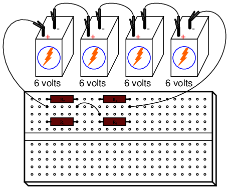
Esta no es de ninguna manera la única forma de conectar estas cuatro resistencias para formar el circuito que se muestra en el esquema. Considere este diseño alternativo:
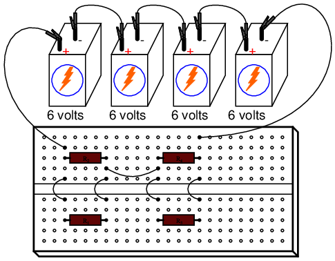
Si se desea una mayor permanencia sin recurrir a soldadura o envoltura de cables, se podría optar por construir este circuito en unregleta de terminales(también llamado untira de barrera, obloque de terminales). En este método, los componentes y cables se aseguran mediante tensión mecánica debajo de tornillos o clips pesados unidos a pequeñas barras de metal. Las barras metálicas, a su vez, están montadas sobre un cuerpo no conductor para mantenerlas eléctricamente aisladas entre sí.
Construir un circuito con componentes asegurados a una regleta de terminales no es tan fácil como conectar componentes a una placa de pruebas, principalmente porque los componentes no se pueden organizar físicamente para parecerse al diseño esquemático. En cambio, el constructor debe entender cómo "doblar" la representación del esquema en el diseño de la franja del mundo real. Considere un ejemplo de cómo se podría construir el mismo circuito de cuatro resistencias en una regleta de terminales:
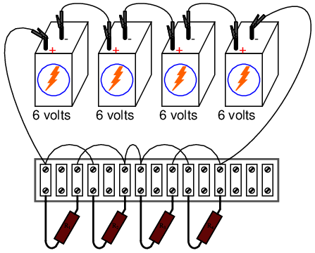
Otro diseño de regleta de terminales, más sencillo de entender y relacionar con el esquema, implica anclar resistencias en paralelo (R1//R2y r3//R4) a los mismos dos puntos terminales en la tira así:
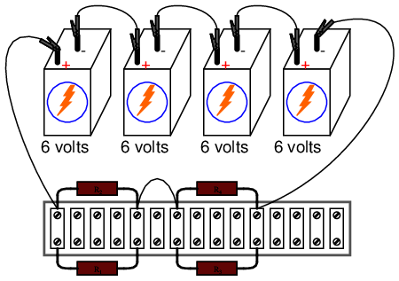
Construir circuitos más complejos en una regleta de terminales implica las mismas habilidades de razonamiento espacial, pero, por supuesto, requiere mayor cuidado y planificación. Tomemos, por ejemplo, este complejo circuito, representado de forma esquemática:
¡La regleta de terminales utilizada en el ejemplo anterior apenas tiene suficientes terminales para montar las siete resistencias necesarias para este circuito! Será un desafío determinar todas las conexiones de cables necesarias entre resistencias, pero con paciencia se puede lograr. Primero, comience instalando y etiquetando todas las resistencias en la tira. El diagrama esquemático original se mostrará junto al circuito de la regleta de terminales como referencia:
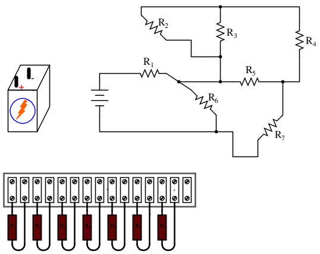
A continuación, comience a conectar los componentes cable por cable como se muestra en el esquema. Dibuje en exceso las líneas de conexión en el esquema para indicar que se ha completado el circuito real. Mire esta secuencia de ilustraciones a medida que se identifica cada cable individual en el esquema y luego se agrega al circuito real:
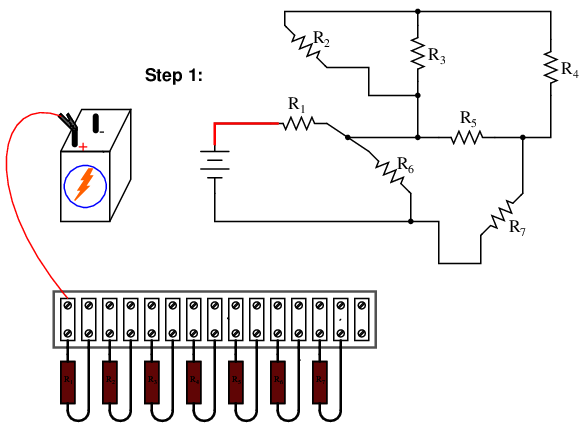
Aunque existen variaciones menores posibles con este circuito de regleta de terminales, la elección de las conexiones que se muestran en esta secuencia de ejemplo es eléctricamente precisa (eléctricamente idéntica al diagrama esquemático) y conlleva el beneficio adicional de no sobrecargar ningún terminal de tornillo en la regleta con más de dos extremos de cable, una buena práctica en cualquier circuito de regleta de terminales.
Un ejemplo de una conexión de cable "variante" podría ser el último cable agregado (paso 11), que coloqué entre el terminal izquierdo de R2y el terminal izquierdo de R3. Este último cable completó la conexión paralela entre R2y r3en el circuito. Sin embargo, podría haber colocado este cable entre el terminal izquierdo de R2y el terminal derecho de R1, ya que la terminal derecha de R1ya está conectado al terminal izquierdo de R3(Habiendo sido colocado allí en el paso 9) y por lo tanto es eléctricamente común con ese punto. Sin embargo, hacer esto habría resultado entrescables asegurados al terminal derecho de R1en lugar de dos, que es unfalsa pazen la etiqueta de la regleta de terminales. ¿El circuito habría funcionado de esta manera? ¡Ciertamente! Lo que pasa es que más de dos cables asegurados en un solo terminal crean una conexión "desordenada": una que es estéticamente desagradable y puede generar una tensión indebida en el terminal de tornillo.
Otra variación sería invertir las conexiones de los terminales de la resistencia R.7. Como se muestra en el último diagrama, la polaridad del voltaje en R7es negativa a la izquierda y positiva a la derecha (-, +), mientras que todas las demás polaridades de resistencia son positivas a la izquierda y negativas a la derecha (+, -):
Si bien esto no plantea ningún problema eléctrico, podría causar confusión a cualquiera que mida las caídas de voltaje de una resistencia con un voltímetro, especialmente un voltímetro analógico que "fijará" la escala cuando se someta a un voltaje de polaridad incorrecta. En aras de la coherencia, sería aconsejable organizar todas las conexiones de cables de manera que todas las polaridades de caída de voltaje de las resistencias sean las mismas, así:
Aunque a los electrones no les importa esa coherencia en el diseño de los componentes, a las personas sí les importa. Esto ilustra un aspecto importante de cualquier esfuerzo de ingeniería: el factor humano. Siempre que un diseño pueda modificarse para facilitar su comprensión y/o su mantenimiento, sin sacrificar el rendimiento funcional, debe hacerse así.
- REVISAR:
- Los circuitos construidos sobre regletas de terminales pueden ser difíciles de diseñar, pero una vez construidos son lo suficientemente robustos como para considerarse permanentes, pero fáciles de modificar.
- Es una mala práctica asegurar más de dos extremos de cables y/o cables de componentes debajo de un solo tornillo o clip de terminal en una regleta de terminales. Intente disponer los cables de conexión para evitar esta condición.
- Siempre que sea posible, construya sus circuitos teniendo en cuenta la claridad y la facilidad de comprensión. Aunque la disposición de los componentes y el cableado suele tener poca importancia en el funcionamiento del circuito de CC, es muy importante para la persona que tiene que modificarlo o solucionarlo más adelante.
Contributors
Los contribuyentes a este capítulo se enumeran en orden cronológico de sus contribuciones, desde el más reciente hasta el primero. Consulte el Apéndice 2 (Lista de colaboradores) para fechas e información de contacto.
Tony Armstrong(23 de enero de 2003): inversión de polaridad sugerida en la resistencia R7en el último circuito de la regleta de terminales.
Jason Stark(Junio de 2000): Formato de documentos HTML, que dio lugar a una segunda edición mucho más atractiva.
Ron La Plante(Octubre de 1998): ayudó a crear un método de "tabla" para el análisis de circuitos en serie y en paralelo.
Lecciones en circuitos eléctricoscopyright (C) 2000-2023 Tony R. Kuphaldt, según los términos y condiciones delCC BY License.